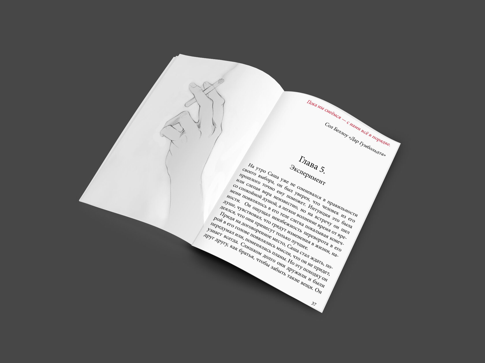
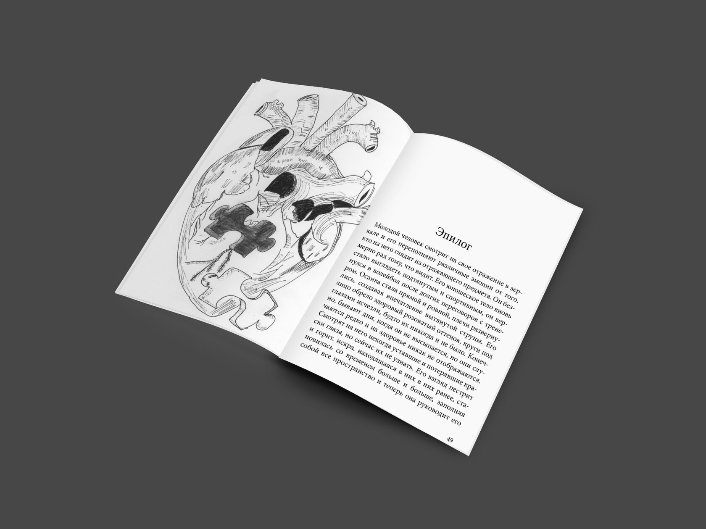

Книга для подростков "Кто я?"
Книга позволит вам ощутить на себе все эмоции, происходящие с главным героем. Вы пройдете путь рядом с ним, прочувствуете трудности, начнете понимать его мысли и действия. Ниже вы можете ознакомиться с цитатами - моментами из книги.
 - Это история становления юноши, который шаг за шагом старается найти себя настоящего и вспомнить, кем является. Молодой человек потерял свою личность, внешность и даже имя. Его давно уже называют по-другому... Сможет ли он вернуть себя? И кто ему в этом поможет? Кто будет рядом: новые друзья или человек из прошлого?
- "Рубашка хлестает мое тело, на минуту я даже подумал, что она может оставить на мне след, волосы намокли из-за дождя, но мой взгляд не может быть отвлечен ни на миг."
- Миллионы рук утягивают меня вниз, их холодные, липкие прикосновения оставляют ожоги на моем теле. Длинные худые пальцы держат меня со всей силой и давят, забирая меня с собой.
- Пытаюсь позвать на помощь, хочу закричать и не сдерживаюсь, но из моего рта не вылетает ни один звук, слышится лишь совсем тихий, угасающий стон. Они закрывают мне рот.